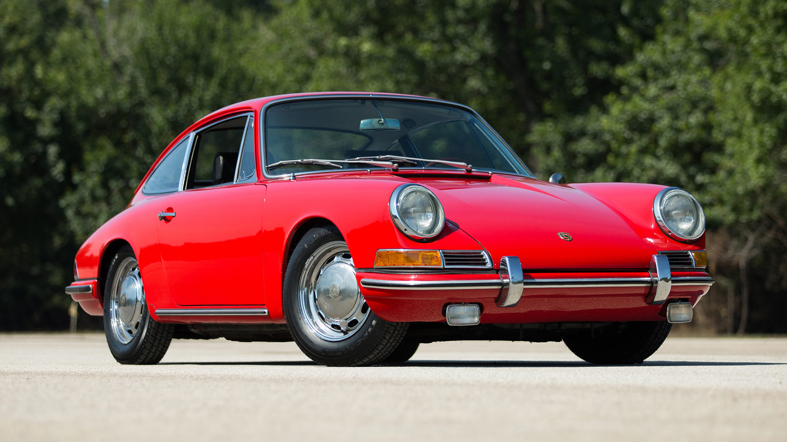
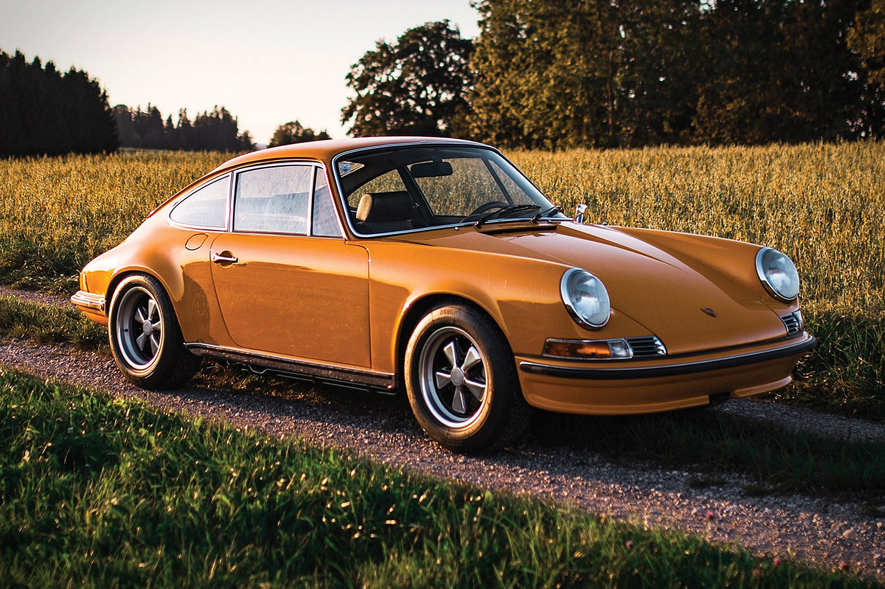
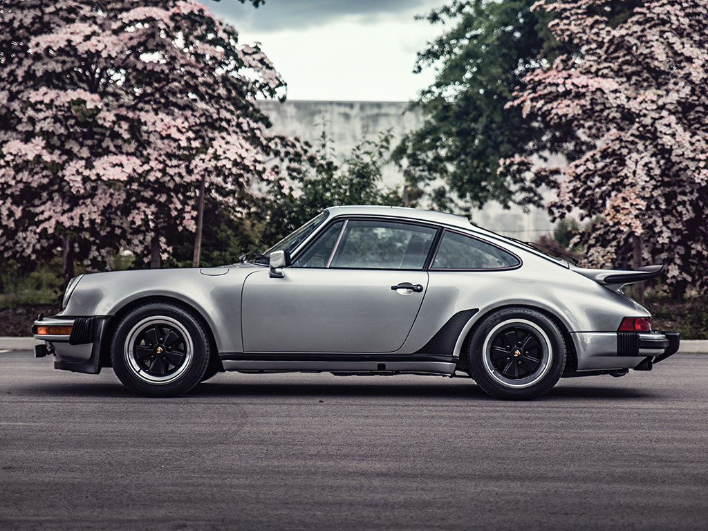
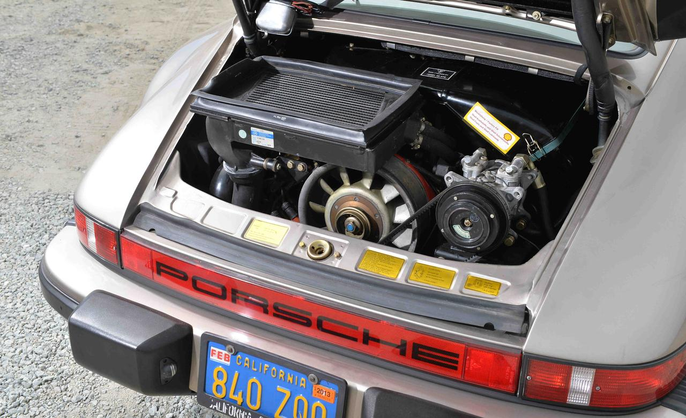

| ГЛАВНАЯ | ИНФО |
Звук запуска:
Porsche 991 turbo 3.3 Coupe или же Porsche 930 – немецкий спортивный автомобиль компании Porsche. Производство линейки двухдверного купе или кабриолета на его основе началось в 1964 году и продолжается по сей день.
Оригинальный 911ый появился на Парижском автосалоне в 1964 году, а уже через год началась его продажа в Европе. Тогда он оснащался - оппозитной “шестеркой” на 2 литра и выдавал мощность в 130 л.с.
На протяжении десятилетия 911 модернизировался, получал как визуальные изменения, так и технические. Так к 1973 году была выпущена самая мощная версия первого поколения - Carrera RS. На выбор покупателю предоставлялось 6 двигателей объемом 2.4 литра различной мощности – от 140 до 210 л.с.
В 1972 году компания Porsche разработала версию 911 с турбонаддувом. Затем компанией Porsche было решено создать вариант 911 с максимально улучшенной отделкой, который мог бы конкурировать с более дорогими и эксклюзивными Ferrari и Lamborghini, нежели стандартный 911. Мощность двигателя была больше, чем у стандартной Carrera — 260 л. с. (191 кВт). Вследствие значительного повышения мощности были пересмотрены подвеска, тормоза и коробка передач. Также устанавливались задние спойлеры «Whale-Tail» для лучшего воздушного охлаждения, расположенного сзади двигателя и увеличения прижимной силы на заднюю часть машины, более широкие задние колёса и сцепление от 911 для лучшей стабилизации.
Новый Porsche был представлен на Парижском автосалоне в октябре 1974 года, продажи начались весной 1975 года, экспорт в США — с 1976 года. 930 оказались очень быстрым, но и крайне требовательным автомобилем — из-за заднего расположения двигателя, короткой колёсной базы в сочетании с турбо-двигателем автомобиль имел склонность к чрезмерной поворачиваемости и требовал более опытного водителя. При скоростной езде требовалось поддерживать высокие обороты двигателя.
В 1978 году 930 подверглись значительной модернизации. Объём двигателя увеличился до 3,3 л с добавлением интеркулера «воздух-воздух», позволившего увеличить мощность до 300 л. с. Теперь “выходец из Штутгарта” мог разгоняться до 60 миль/ч за 5 секунд, и развивать предельную скорость в 261 км/ч, что весьма неплохо, при условии, что он стоил практически в 2 раза дешевле Ferrari Testarossa и в 3.7 раза Lamborghini Countach 5000QV. Задний спойлер переместился чуть выше для освобождения места для интеркулера. Устанавливались также тормоза от гоночной Porsche 917.